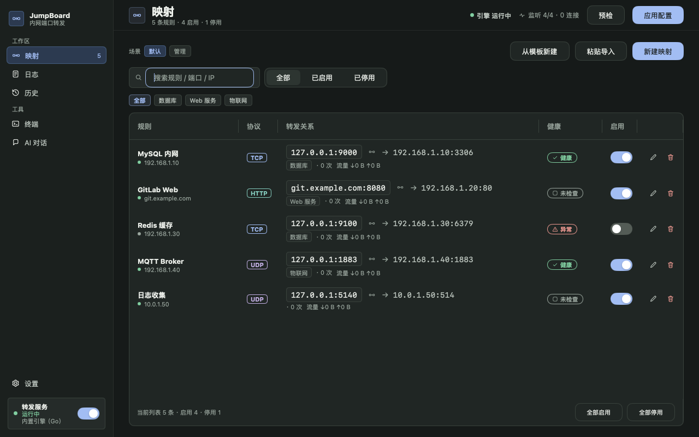
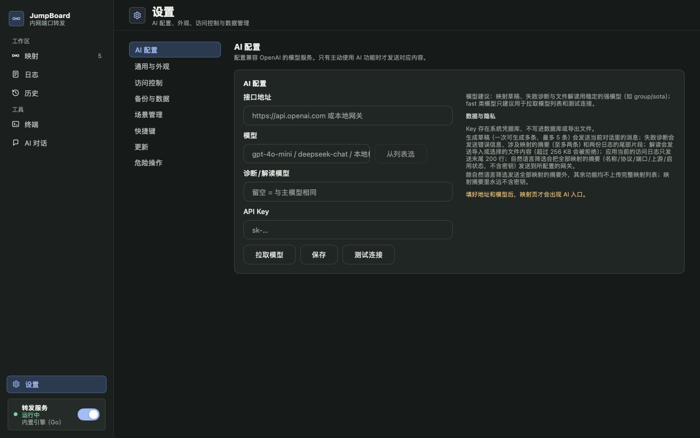
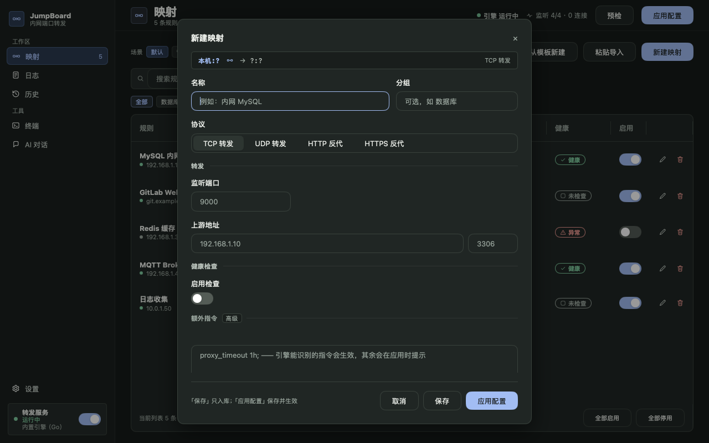

映射工作台 · 暗色
场景切换 / 筛选 / 启停与批量操作
设置与表单 · 暗色
说明文字、输入边界与主操作
新建映射 · 暗色
开关、协议与表单反馈
复核结论
优先修可读性和控件状态，再优化路径。 场景选择器应该收成一个完整的“场景名 + 展开入口”，管理场景独立成文字按钮；普通按钮、图标按钮、芯片和表格行共享同一套 hover / pressed / focus / disabled 规则。随后把「未应用」从一条提醒变成明确的任务状态，让改动、检查、应用和异常处理在同一条路径里闭环。